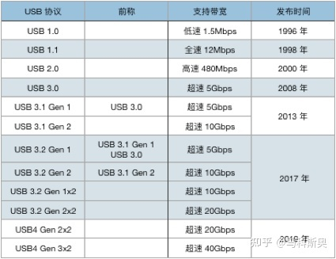
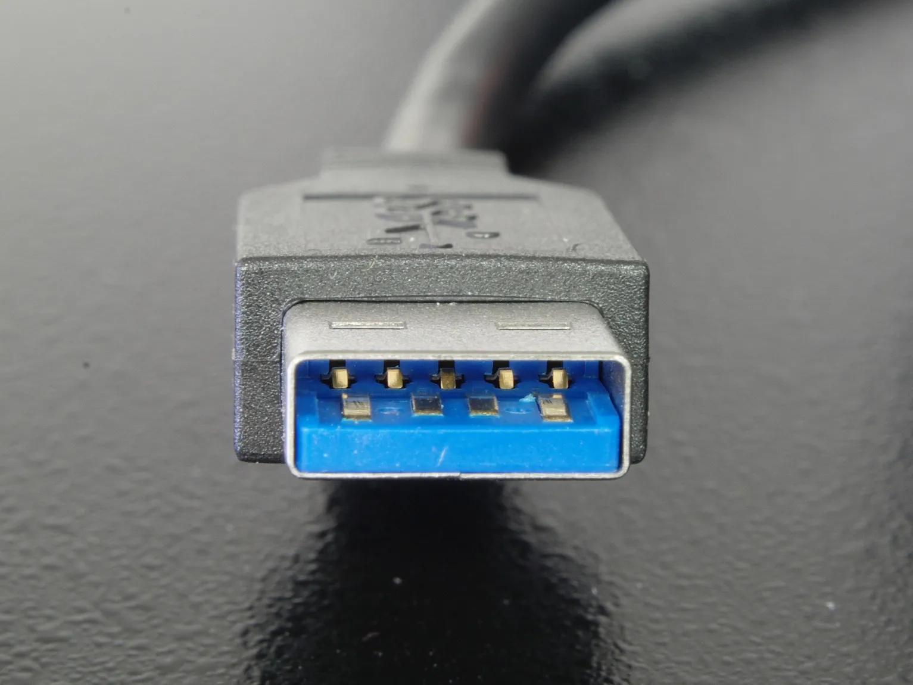
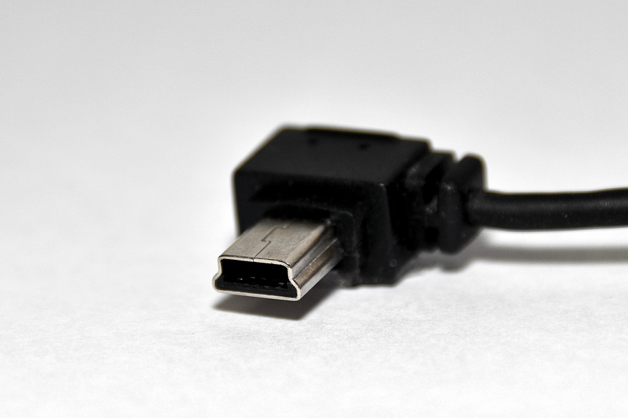
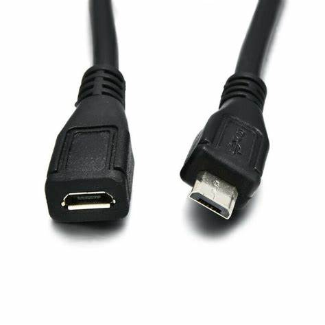
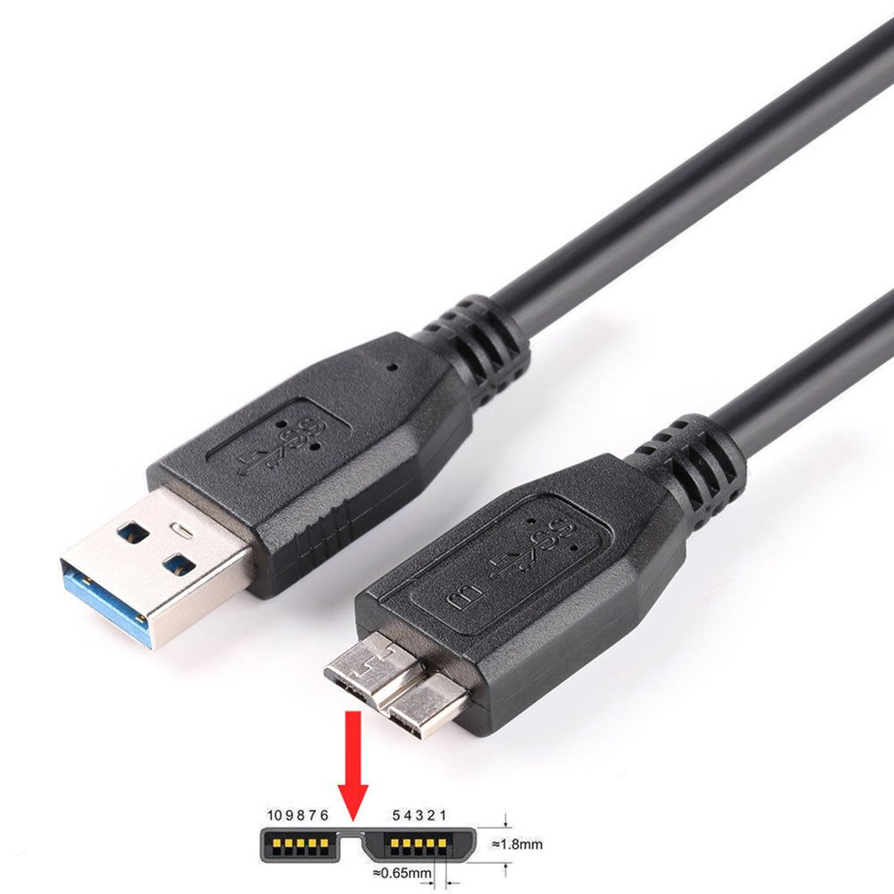
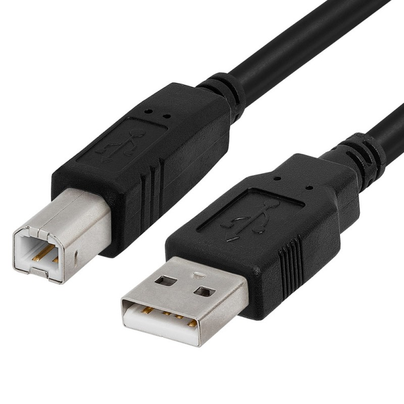
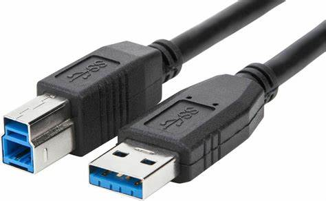
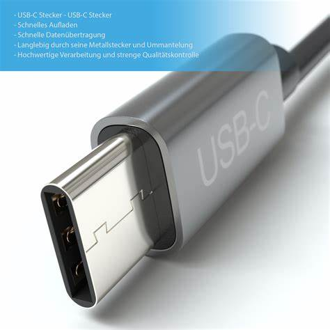
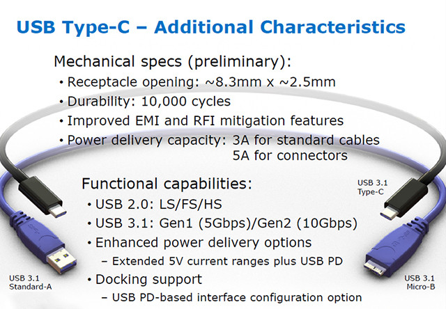
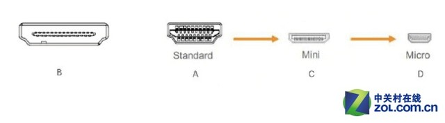

计算机接口-USB篇
一、USB 是什么
Universal Serial Bus，简称 USB。中文为通用串行总线，是一种串口总线的标准，也是一种输入输出接口的技术规范，被广泛应用于各种设备之中，大到个人电脑，小到手机手表。


1、USB 1.0
1996 年，正式发布第一代 USB 1.0，传输速度仅为 1.5Mbps。最大的特点是支持热插拔，即插即用。如今已经成为历史。
2、USB 2.0
2000 年，USB 2.0 发布，最高传输速度提高到 480Mbps。这在当时是很快的传输速度，但是在今天随便一个移动硬盘都是 T 级别的，USB 2.0 的传输速度已经不够用了。
3、USB 3.0
2008 年，USB 3.0 发布，传输速度提高到 5Gbps。
4、USB 3.1
2013 年，USB 3.1 发布，传输速度达到了 10Gbps。从这里开始，USB-IF 开始了魔幻操作，对之前的接口标准重命名了，导致现在接口名称混乱。
以前的 USB 3.0 改名为 USB 3.1 Gen 1 又称为第一代 USB 3.1，新发布的 USB 3.1 改名为 USB 3.1 Gen 2 又称为第二代 USB 3.1。前面提到的 USB 3.0 消失在了历史长河。
5、USB 3.2
2017 年，USB 3.2 发布，最高速度达到了 20Gbps。没有错，USB-IF 组织又对接口标准重命名了。
第一代 USB 3.1 改名为 USB 3.2 Gen 1 又称为第一代 USB 3.2，第二代 USB 3.1 改名为 USB 3.2 Gen 2 又称为第二代 USB 3.2。就这样，USB 3.1 也消失在了历史长河。
新发布的 USB 3.2 （传输速度 20Gbps），叫做 USB 3.2 Gen 2x2 又称为双通道第二代 USB 3.2
6、USB4
2019 年，USB4 发布，分为两个版本，一个是 20Gbps，一个是 40Gbps。物理接口形态统一使用 USB Type-C 接口。
在多年的发展中，USB 协议不断改进，从最开始的 1.1 标准发展到目前即将推出的 USB4 标准。USB 接口在硬件结构上也发展出了许多种类。随着 USB 标准的发展，传输数据的速度也极大地增加，当然协议难度也比原来更加复杂。（为了保证设备兼容性，所有协议都向下兼容。）
USB Type-A

又称 USB-A，在电脑、手机充电器中很常见。为了区分不同的接口协议，通常使用 USB 3.0 协议的 USB-A 接口颜色为蓝色。
Mini-USB

Mini USB 分为 A 型，B 型和 AB 型。Mini-B 5Pin 是最常见的一种了，由于防误插性能出众，体积也比较小巧，赢得了很多厂商青睐，这种接口广泛出现在 MP3、数码相机以及移动硬盘上。
Micro-USB

Mini-USB 接口分 A/B，Micro-USB 也不例外。Micro-USB 是 Mini-USB 的改良版，它再次缩小了体积，更适用于现在越来越轻薄的移动设备。另外，欧盟也规定，2017年所有在加盟国销售的手机必须采用 Micro-USB 接口，足见其成功及广大覆盖率。
Micro-USB 3.0

Micro-USB 3.0 在外观上做出了改变。Micro-USB 3.0 在高度上与 Micro-USB 2.0 无异，但是长度明显增长了。
USB Type-B


或许是设计之初并未考虑到今后的发展，导致了增加的针脚无处放置。因此 Type-B USB3.0 接口不得不改变了外观，较 Type-B USB2.0 增加了高度。
USB Type-C

Type-C 接口与 USB 3.1 标准几乎同时推出，Type-C 的规范也确实是按照 USB 3.1 所制定，因此 USB 3.1 当然可以制作为Type-C类型，但 Type-C 不等于 USB 3.1。

相比 Micro-USB 接口只能单面插入的防呆设计，Type-C接口则可以正反插，大大方便了用户平日的使用。
且支持雷电 3（Thunderbolt 3）传输协议，传输速度将从 USB 3.1 的 10Gbps 提高至 40 Gbps
二、接口规范
Type-C 是革命性的出现，什么这么说？USB 接口规范众多（混乱），主设备接口、从设备接口以及移动设备接口的形状全都不一样，而每类接口还又分为 A/B 等等，我们不禁发出一声感叹：为什么就不能统一呢？Type-C 的出现则解决了这一问题，不同于只在主设备使用的 Type-A、只在从设备使用的 Type-B 以及只在移动设备使用的 Mini-USB 和 Micro-USB，它是一种既可以在主设备，又可以在从设备，还可以在移动设备使用的接口。

USB 接口规范的混乱并不是个例，有很多接口也存在着类似的问题。比如 HDMI，常见的是标准HDMI 以及 Mini HDMI，但还有 Micro HDMI，似乎后者的出现显得没有必要。
三、杂项SS
1. 关于 USB Type-C
USB Type-C 只是一个物理接口形态，虽然支持 PD 充电、USB 数据传输、DisplayPort 显示，但是实际上，还要看设备厂商有没有搭配对应的功能。设备制造商可以自由的选择要支持的功能，也可以提供全功能的 USB-C 接口，但是基于成本等其它原因，可能只有一项或者某几项功能。
所以，千万不要认为 USB Type-C 就是 USB 3.1，而反过来，如果一个接口使用了 USB 3.1 标准，那么物理接口形态一定是 USB Type-C。在购买 USB-C 接口的设备时，要特别注意接口支持的功能。
2. USB Type-C 不是 USB PD
USB Power Delivery，简称为 USB PD，是 USB-IF 组织制定的充电标准和技术，最早发布于 2012 年。可以将 USB 电源能力提升到 100W。这两个名词不能互换。另外，不是有 USB-C 接口就一定支持 PD 快充协议。
3. 关于 Type-C
从 USB-IF 官方资料来看，是没有这个叫法的，官方推荐的叫法只有全称 USB Type-C，及简称 USB-C。
至于为什么国内称之为 华为口，华为最早是 2015 年在与谷歌的私生子 Google Nexus 6P 上首次使用 USB Type-C 接口的，但乐视早在 2013 年就用了，按理应该叫 乐视口，怎么也轮不到华为啊（笑哭）。
四、USB4
什么是 USB4
USB4 是最新一代 USB 传输标准，向后兼容 USB 2.0、USB 3.2 和 Thunderbolt 3，其实是在雷电 3（Thunderbolt 3）的基础上，增加了对 USB 2.0 和 USB 3.2 标准的补充和发展。
USB4 有两种传输带宽，一种是 20Gbps，另一种是 40Gbps。
主要特点：
- 最大支持 40Gbps 带宽
- 物理接口仅有 USB Type-C 一种
- 支持动态分配带宽
- 可选是否支持 Thunderbolt 3，只有这样才能达到最大带宽 40Gbps
- 需要强制使用 USB-PD 充电协议
USB4 只有 USB Type-C 一种物理接口。在传输链路上 USB4 分出了不同「隧道」来传输数据，并且能「动态分配带宽」，根据每条「隧道」的实时情况，动态调整每一部分的带宽。目前支持：数据传输（USB 3.2 隧道）、视频传输（DisplayPort 1.4a 隧道）、可选隧道（PCI-E 隧道）三种。
什么是 Thunderbolt
Thunderbolt 又称雷电，是英特尔公司发布的一套连接标准，从 Thunderbolt 3 开始改用 USB Type-C 接口，在 USB-C 接口边上会有个闪电标志，在苹果电脑上比较常见。
最新标准的 Thunderbolt 4 在 Thunderbolt 3 的基础上有小幅更新。另外支持连接两个 4K 显示器，或者一个 5K 显示器。
需要注意的是，USB4 对 Thunderbolt 3 & 4 都是可选兼容。可以这么理解 USB4 40Gbps 等于 Thunderbolt 4。